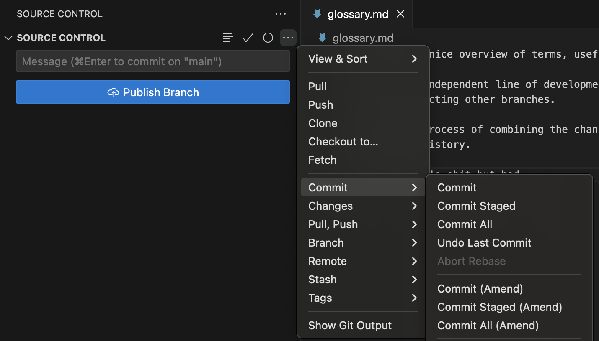
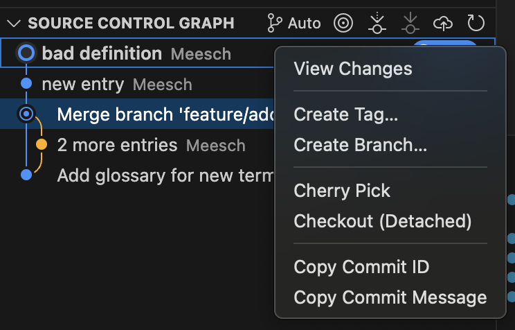
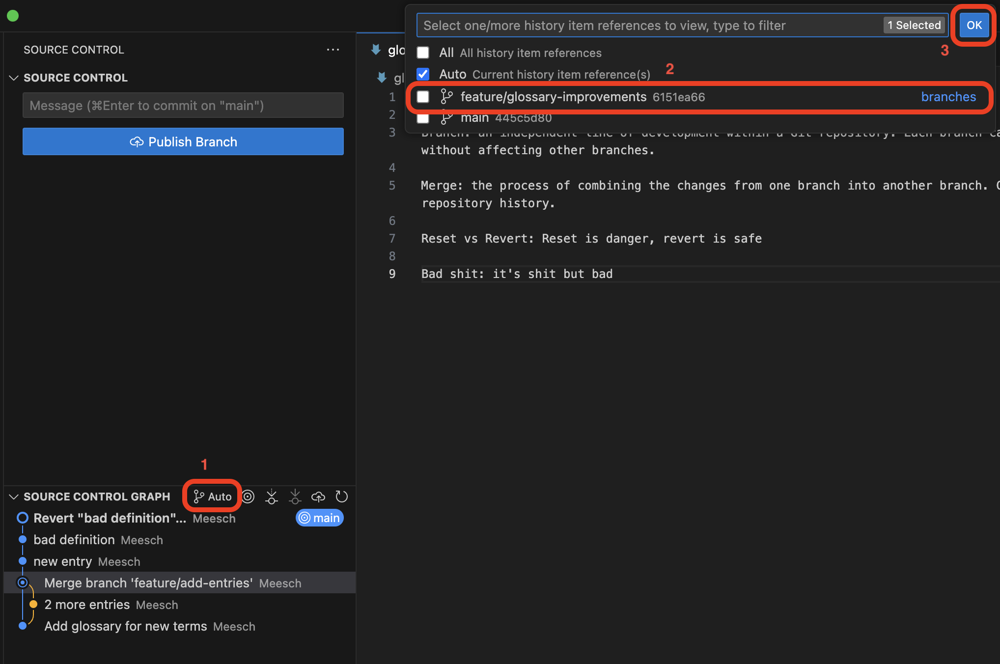
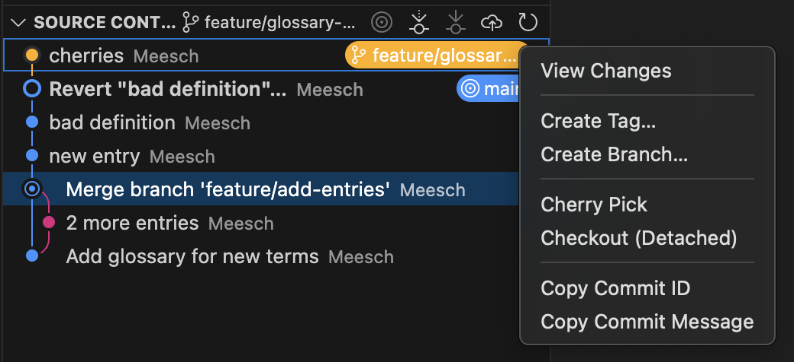
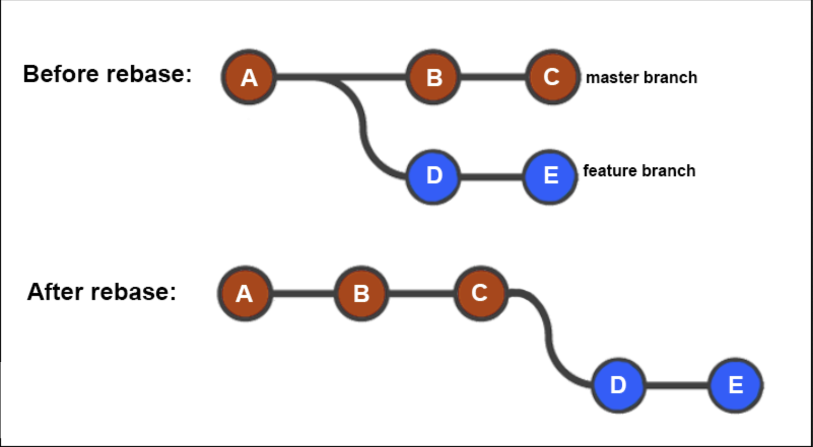
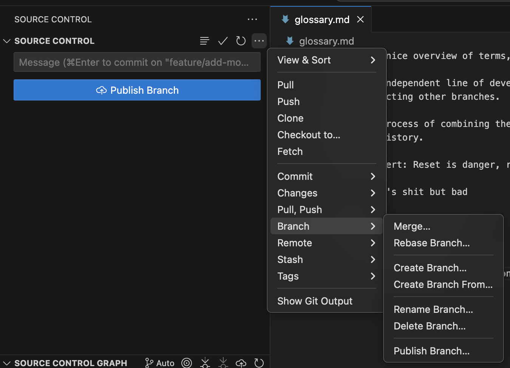
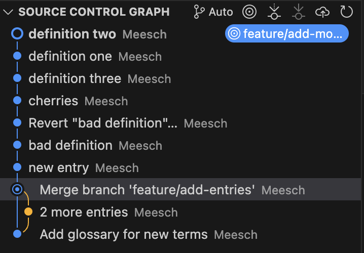

Rewriting History
Objectives
In this module, you will learn:
- How to undo commits using
git reset - How to safely reverse commits using
git revert - How to move commits between branches using
git cherry-pick - How to update a branch using
git rebase
Git Reset
git reset allows you to move the pointer of the current branch to a different commit, essentially walking back in time. Git has three main modes for resetting:
- Mixed reset:
git reset --mixed- keep changes in the working directory (no work is lost) - Soft reset:
git reset --soft- keeps the changes and adds them to the staging area (no work is lost) - Hard reset:
git reset --hard- discards all changes and overwrites files to the state from the intended commit (work is lost)
With git reset you can undo a commit that was made too early or with an incorrect commit message.
Rewriting history
Avoid using git reset on commits that have already been shared with collaborators unless you understand the consequences. Resetting rewrites project history.
Exercise: undo a commit with git reset
- Step 1: Open your
playgroundrepository. - Step 2: Add a new term to
glossary.md. - Step 3: Commit the changes, but with a bad commit message.
- Step 4: Open the Source Control options (
..., top right of menu) and select Commit... > Undo Last Commit
- Step 5: Look at the Source Control menu: which mode for reset has been used?
- Step 6: Create a new commit with a better message.
More reset modes?
When using the standard VScode extension for Git, the only option you have for resetting a commit is to undo the last commit in soft mode. With the command line (or more elaborate Git plugins) you can reset to any commit in history, and use the different modes. If you want to try those modes, use the command line.
- Step 1: Open your
playgroundrepository. - Step 2: Add a new term to
glossary.md. - Step 3: Commit the changes, but with a bad commit message.
- Step 4: View the commit history using
git log --oneline. - Step 5: Undo the most recent commit while keeping the changes staged:
git reset --soft HEAD~1 or git reset --soft <intended_commit_id>
- Step 6: Verify that the changes are still staged using
git status. - Step 7: Commit the changes again using a better commit message.
Git Revert
Unlike git reset, git revert does not remove commits from history. Instead, it creates a new commit that reverses the changes introduced by an earlier commit.
Because it preserves project history, git revert is often the preferred way to undo changes that have already been shared with others.
Exercise: revert a commit
- Step 1: Open your
playgroundrepository. - Step 2: Add a glossary entry that you do not intend to keep.
- Step 3: Commit the change.
- Step 4: Open the Source Control Graph.
- Step 5: In the Source Control Graph menu, right-click the 'bad' commit and select Copy Commit ID

- Step 6: Now, using the built-in terminal, navigate to your playground directory.
- Step 7: Revert the 'bad' commit using:
git revert <COMMIT_ID>(you can paste the ID from your clipboard) - Step 8: Two things will happen: your terminal will open a text editor to handle the new commit, but VSCode will also recognize the new commit and show it in the Source Control Menu. For now, just commit the new commit using the VSCode plugin, then you can close the terminal again.
- Step 9: verify that a new commit was created, reverting the bad commit.
- Step 1: Open your
playground_NAMErepository. - Step 2: Add a glossary entry called "Bad Definition".
- Step 3: Commit the change.
- Step 4: Locate the commit using
git log --oneline. - Step 5: Copy the commit ID to your clipboard.
- Step 5: Revert the commit:
git revert <COMMIT_ID>
- Step 6: A text editor will open with the full commit message for the revert commit. Git will finish comitting when you close the editor.
- Step 6: Verify that Git creates a new commit.
- Step 7: Confirm that the glossary entry has been removed.
Git Cherry-pick
Sometimes you only want a single commit from another branch rather than all of the work on that branch. For example, when your colleague has fixed a bug on their branch, but that branch is not ready to merge yet, you can cherry-pick it into your own branch. This will create the commit on your own branch, and if you and your colleague both merge, two identical commits will show up in the history, the later one seemingly not changing anything. Usually this is fine, but it can be a cause of merge conflicts....
When is cherry-pick used?
By far the most common use case for git cherry-pick is to hotfix a bug on your branch #1 that has been fixed in branch #2. This will allow you to keep working on branch #1 with the bug fixed, without having to merge branch #2. For other purposes, git merge or rebase are preferred, as they keep the history linear, whereas cherry-pick creates a copied commit, which will show up twice in the history if both branches are merged into one.
Exercise: cherry-pick (copy) a commit between branches
- Step 1: Create a branch called
feature/glossary-improvements. - Step 2: Add a new glossary term and commit it with commit message '
cherries'. - Step 3: Copy the commit ID from the Source Control Graph.
- Step 4: Switch back to
main. - Step 5: Open the Source Control Graph.
- Step 6: Using the branch selector menu (first button to the right of the Source Control Graph menu header that says 'auto'), select the
feature/glossary-improvementsbranch and hit 'OK'. This will show the Source Control Graph for that branch in your current view.
- Step 7: Right click the cherries commit and select Cherry Pick.

- Step 8: Re-select 'auto' in the branch selector menu from step 6.
- Step 9: Verify that the cherries commit has been committed on the main branch and that the glossary term has been added to the glossary file..
- Step 1: Create a branch called
feature/glossary-improvements. - Step 2: Add a new glossary term and commit it with commit message '
cherries'. - Step 3: Copy the commit ID using
git log --oneline. - Step 4: Switch back to
main. - Step 5: Run
git cherry-pick <COMMIT_HASH>. - Step 7: Verify that the cherry-picked commit has been comitted on the main branch and that the glossary term has been added to the glossary file.
Git Rebase (advanced)
Rebasing allows you to replay your branch on top of the latest version of another branch, creating a cleaner and more linear project history. It essentially moves the starting point of your branch to the last commit of the branch on which you are rebasing, and then applies all the changes from your branch after it.

Rewriting history
Avoid using git rebase on commits that have already been shared with collaborators unless you understand the consequences. Rebasing rewrites project history. Are you ready for that?
Exercise: rebase a feature branch
- Step 1: Create a branch called
feature/add-more-definitions. - Step 2: Make two separate commits that add glossary terms (
definition oneanddefinition two). - Step 3: Switch back to
main. - Step 4: Add another glossary term and commit it (
definition three). - Step 5: Switch back to
feature/add-more-definitions. - Step 6: Select Branch... > Rebase Branch... from the Source Control menu.

- Step 7: Choose
mainas the branch to rebase onto. - Step 8: Resolve merge conflict
- Step 9: Inspect the Source Control Graph and observe that your feature branch now sits on top of the latest commit from
main. It should look something like this:
- Step 1: Create a branch called
feature/add-more-definitions. - Step 2: Make two separate commits that add glossary terms (
definition oneanddefinition two). - Step 3: Switch back to
main. - Step 4: Add another glossary term and commit it (
definition three). - Step 5: Switch back to
feature/add-more-definitions. - Step 6: Run
git rebase main. - Step 7: Inspect the history using
git log --oneline --graph. - Step 8: Observe that the feature branch commits now appear after the latest commit on
main.
Works cited:
https://git-scm.com/book/en/v2/ https://carpentries-incubator.github.io/python-intermediate-development/14-collaboration-using-git.html